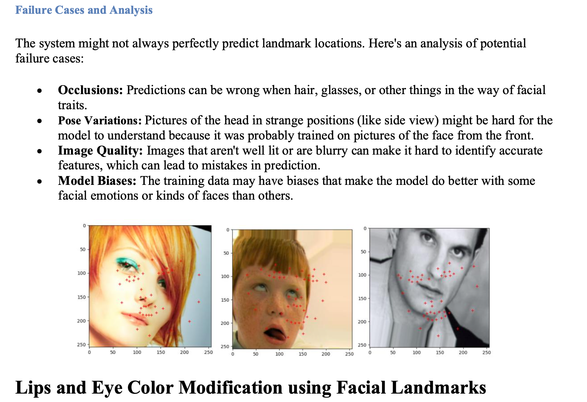

Projects
Binary Image Emotion Classifier

This project involves using machine learning to classify images based on their emotional content, distinguishing between happy and sad images. Various models like Logistic Regression, Random Forest, and SVM were used, achieving an accuracy of 77% with SVM.
Technologies used: Python, scikit-learn, TensorFlow
View ProjectSpotify WebClone

This project involves using the Spotify web interface built with modern web technologies. This project aims to mimic the look and feel of the Spotify webpage, providing a similar user experience with a focus on frontend design and responsiveness.
Technologies used: HTML, CSS, JavaScript
View ProjectFace Alignment System
This project focuses on classifying photos as either happy or sad using advanced machine learning techniques. The dataset used for this task includes 3456 features derived from photos, with a mix of CNN and GIST features.
Technologies used: Python, Scikit-learn, Matplotlib, Seaborn, Logistic Regression, Random Forest,
View ProjectAirBnB Webpage
View ProjectWeather App
This project involves fetching and displaying weather information using a public API.
Technologies used: HTML, CSS, JavaScript
View ProjectReal-Time Greenhouse Gas Emissions Dashboard
This project is a real-time dashboard designed to monitor and visualize greenhouse gas emissions detected by sensors. It involves data ingestion, processing and visualization to provide actionable insights and alerts for significant changes or detected leaks.
Technologies used: Python, React, MongoDB, Microsoft Azure
View ProjectPredictive Analytics System

This project involves the creation, evaluation and deployment of a predictive analytics
system app designed to analyse and forecast sentiment trends.
Data preprocessing: The Amazon Fine Food Reviews dataset was used,
involving review texts and scores and the best model was taken after the result analysis.
The system leverages data mining, machine learning and scalable computing environments
to handle large datasets, preprocess data, build machine learning models, deploy applications
and visualise results effectively.
Please give the webpage at least 1 min to load as
it can delay request after some inactivity.
Technologies used: Python, pandas, scikit-learn, Flask, PostgreSQL
View Project Link
Socials